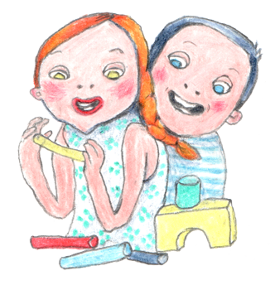
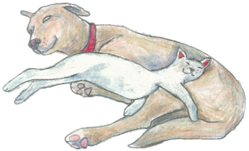

Children will learn to work with ceramics, paints, glue, play dough and many natural resources. They will
learn a big variety of different techniques.

The lecturer of this course is our teacher Erika who studied Secondary Textile School and graduated from Hradec Kralove
University in Textile Work and from DAMU University in Scenography of Alternative and Puppet Theatre. She has
designed and made costumes and decorations for many theatre plays. She is respected by professionals. Her imagination
and playfulness is the reason why she is so good at this and why children love her.
The second lecturer of this course is our teacher Irena who studied a gymnasium, graduated from a Secondary
school in Photography and from a University in Special Pedagogy. She has always loved art. She has a lot of
experience in teaching arts to children and their parents. Her imagination and original ideas will inspire your
children who will love this course.
Trainees and English teachers assist at this course.
Tuesday 3pm–4pm.
Wednesday 3pm–4pm.
Yoga and Tai-Chi for Children
Children will enjoy imitating animals such as tigers, bears or birds and nature features like sea wawes,
touching the Moon or dancing with a ribbon. These activities help to develop their imagination and improve
their memory and flexibility. They also help children to become less restless, anxious and worried. These
types of exercises, If practiced regularly these types of exercises help to prevent your children form illnesses.
The lecturer of this course is Stanislava Hanušová. She is a personality development consultant and healthy
body keeping consultant. She has been learning and teaching yoga for many years. She has attended many seminars.
She is an instructor of Dao Yoga. She has also been a Tai-Chi instructor for 20 years. She attended classes in
Poland and England and has a Degree in it.
Trainees and English teachers assist at this course.
Monday 3pm–4pm.
A little cook
Children will have the opportunity to learn about the preparation of different dishes and about the origins
of the raw materials. We will be cooking our afternoon snacks by ourselves. This will broaden our fantasy,
cooking skills, math and patience.
Thursday morning.
Swimming
We go swimming with the children every other Friday. The swimming pool is in Jedlickuv home. A trained lifeguard
theaches children to swim there but the children also have time to just enjoy the water.
Drama and Singing
Children will learn to perform in front of an audience. They will also improve their memory, vocabulary and
will learn to work with other children as a team. They will learn many songs and play Orf’s musical instruments.
Children will perform a Christmas play and a play at our garden party.
The lecturer of this course is our teacher Erika who works as a stage designer at many theatres, for example
Theatre Komedie, Theatre Minor, Theatre Rozmanistostí Most and so on. She was also an actress and a puppet actress at DNO Theatre.
She will cooperate with our teacher Irenka who will be in charge of music and speach therapy. She plays the
piano and the guitar and is a great singer. She worked in Jiřího Grossmanna Theatre and Theatre Komedie.

Trainees and English teachers assist at this course.
Wednesday morning.